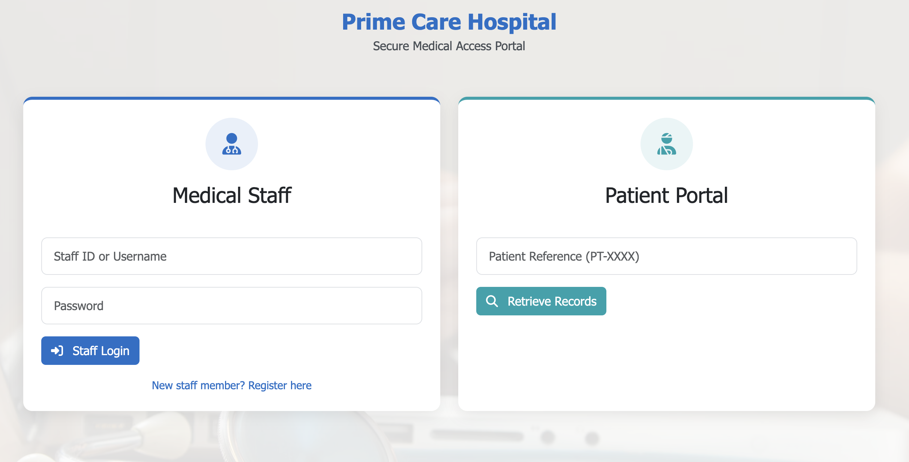
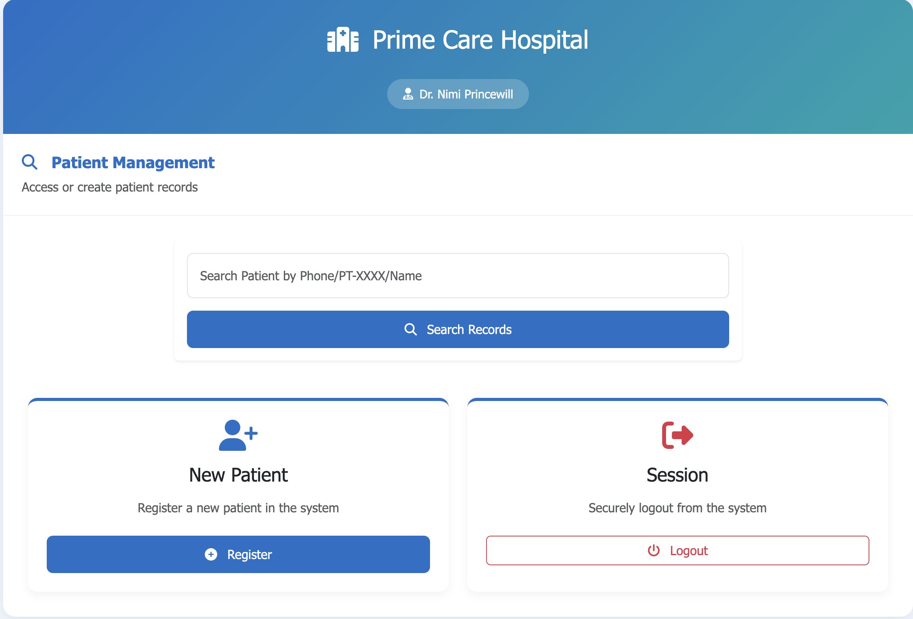
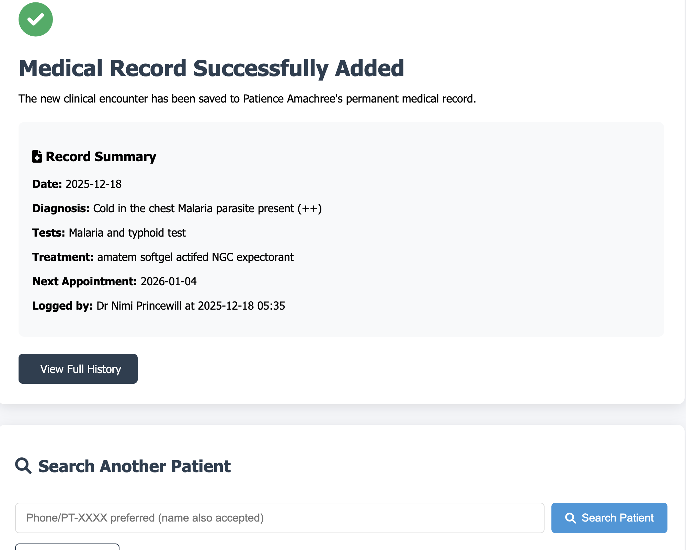
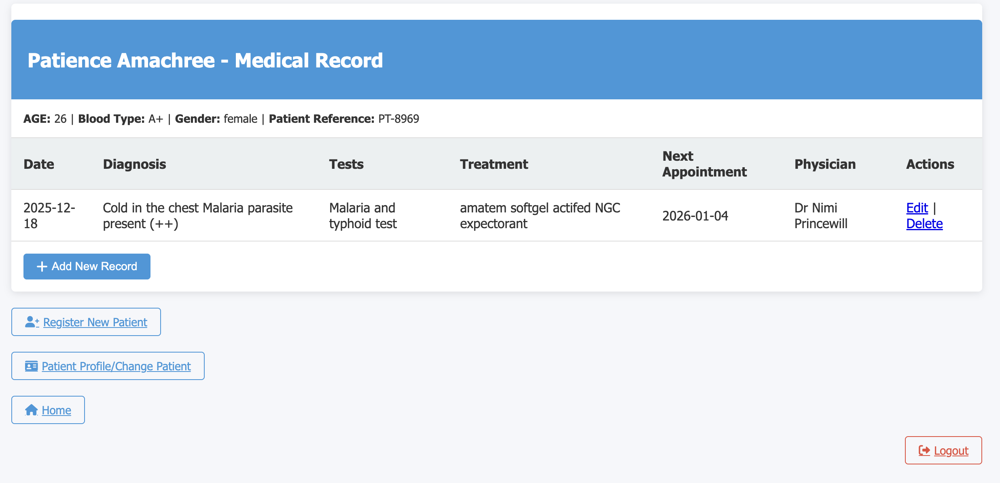
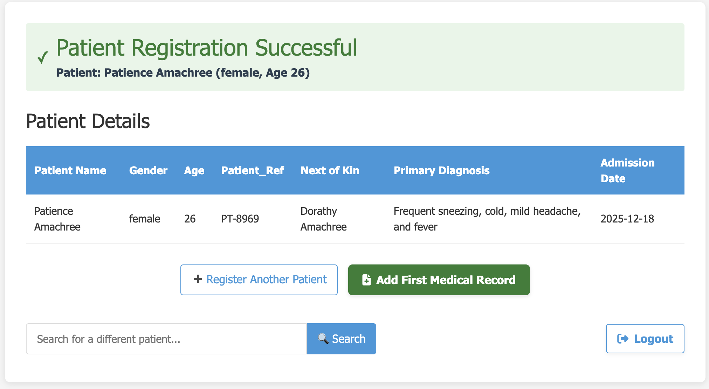
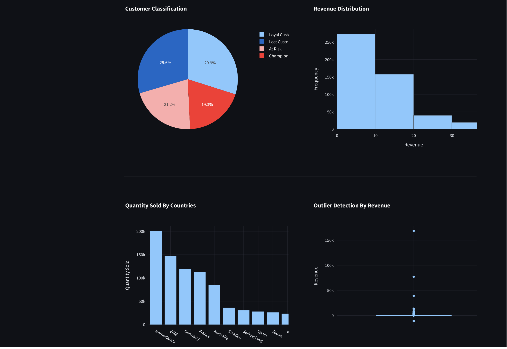
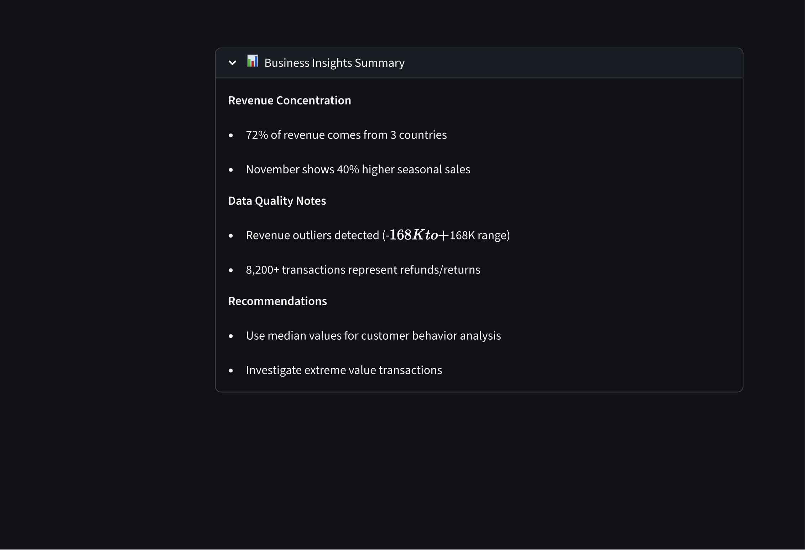
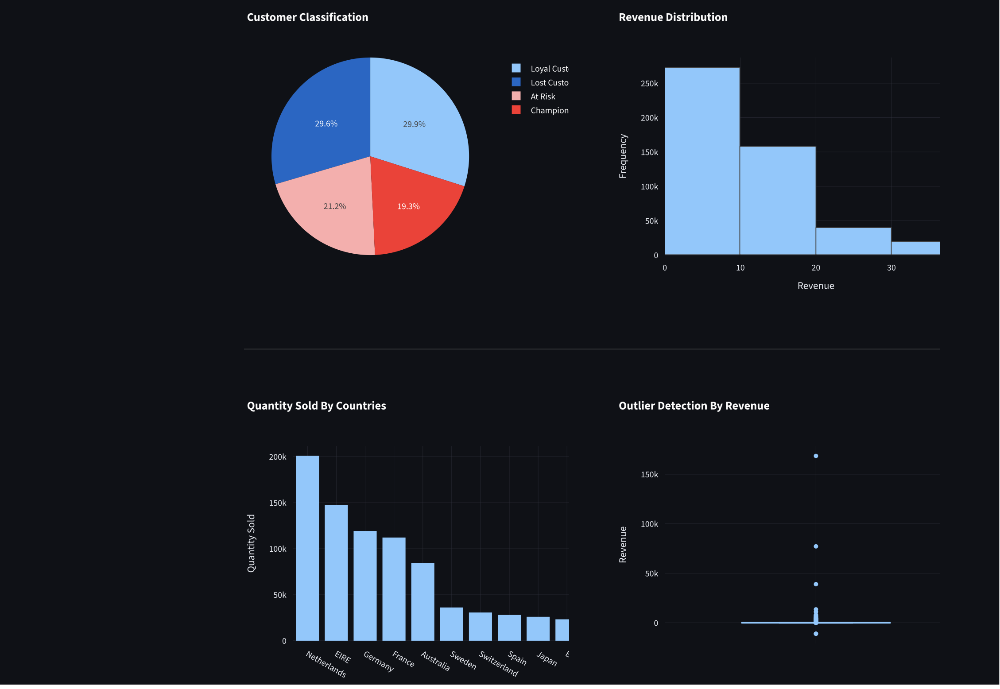
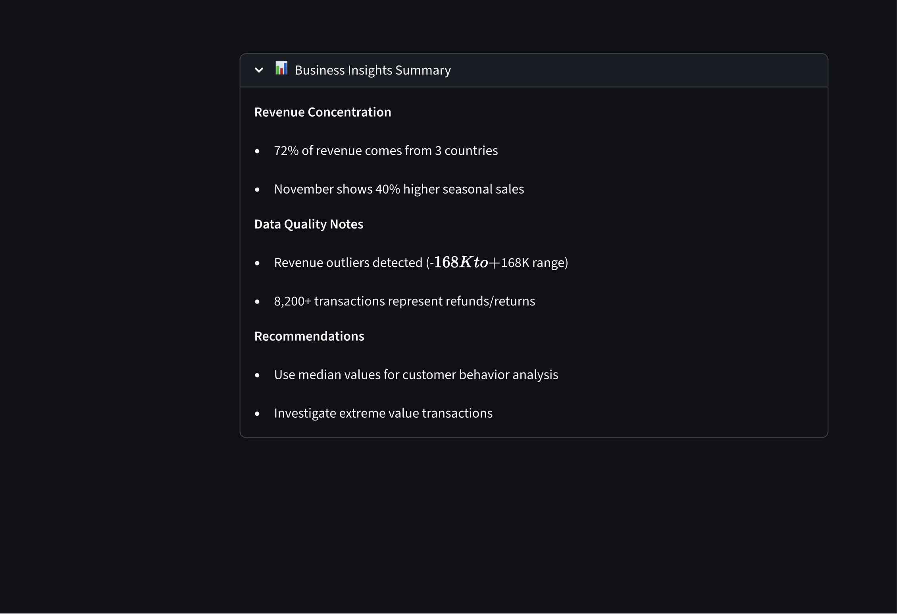

Featured Projects
Hospital Management System
Python · Flask · MySQL · Bootstrap
Architected a production-style hospital management system supporting patient records, visits, and secure clinician access.
- CRUD operations for patients & visits
- Authentication & session handling
- Relational database design





Interactive Data Analytics Dashboard
Python · Pandas · Plotly · Streamlit
Designed an interactive analytics dashboard to analyze trends, patterns, and performance metrics from structured datasets.
- Performed data cleaning, transformation, and aggregation using Pandas
- Built dynamic visualizations for trend analysis and KPI tracking
- Enabled interactive filtering to support exploratory analysis
Focus: Turning raw data into clear, decision-ready insights
 


